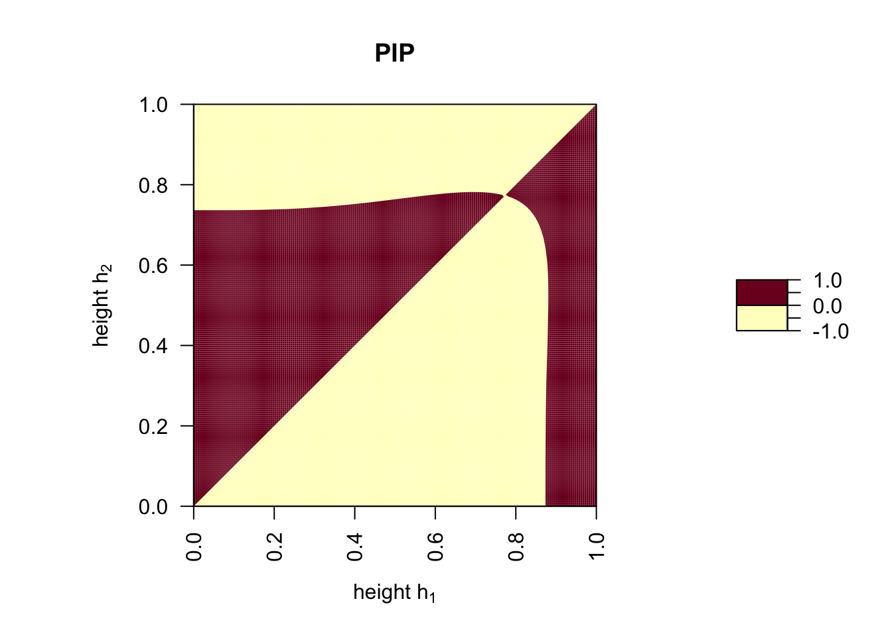
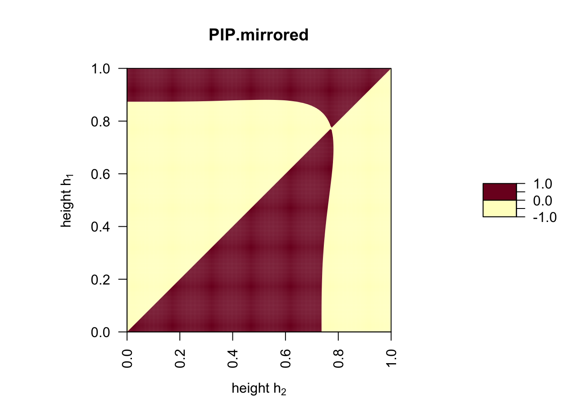
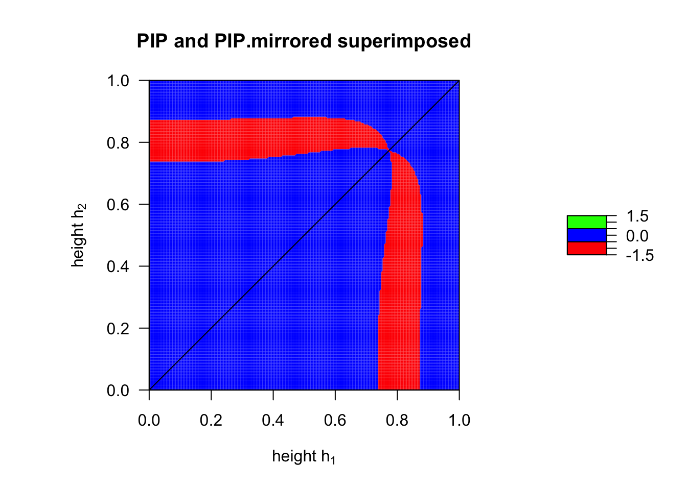
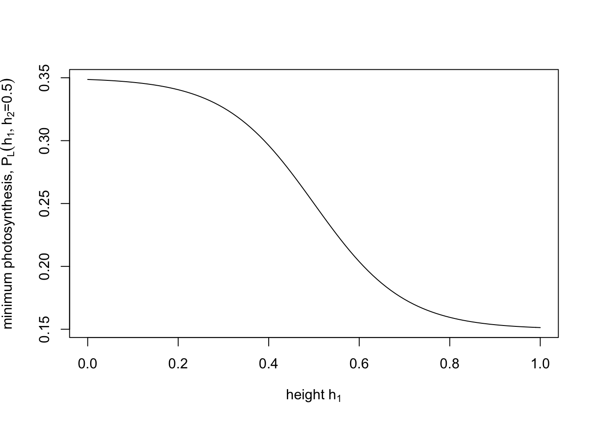
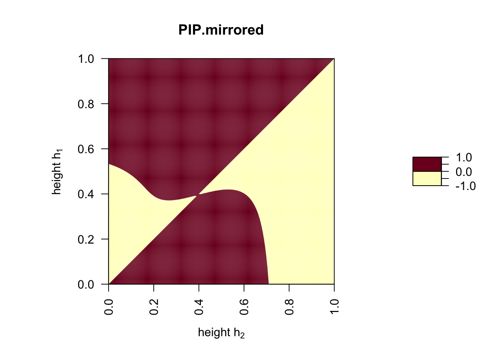
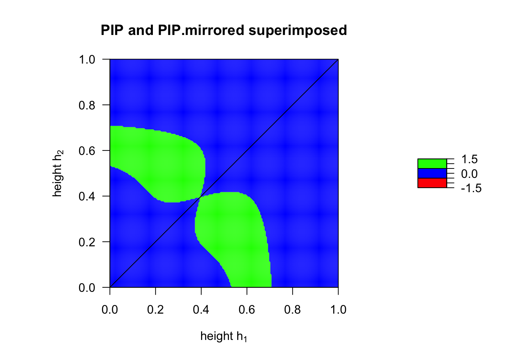

Exercise: Games Plants Play
Evolution in the basic model
f <- function(h) {
1 - h^alpha
}
g <- function(h.1, h.2) {
P.L + (P.H - P.L)/(1 + exp(-beta*(h.1 - h.2)))
}alpha <- 3
beta <- 10
P.L <- 0.2
P.H <- 1w <- function(h.m, h.r) {
f(h.m) * g(h.m, h.r)
}
fitness <- function(h.m, h.r) {
w(h.m, h.r) - w(h.r, h.r)
}
PIP <- outer(seq(0, 1, 0.005), seq(0, 1, 0.005), fitness)
par(pty="s")
filled.contour(t(PIP), levels = c(-1, 0, 1), main = "PIP", xlab = expression("height " *h[1]), ylab = expression("height " *h[2]), las = 2)
fitness.flipped.roles <- function(h.m, h.r) {
w(h.r, h.m) - w(h.m, h.m)
}
PIP.mirrored <- outer(seq(0, 1, 0.005), seq(0, 1, 0.005), fitness.flipped.roles)
par(pty="s")
filled.contour(t(PIP.mirrored), levels = c(-1, 0, 1), main = "PIP.mirrored", xlab = expression("height " *h[2]), ylab = expression("height " *h[1]), las = 2)
TEP <- ifelse(PIP > 0 & PIP.mirrored > 0, 1, ifelse(PIP < 0 & PIP.mirrored < 0, -1, 0))
filled.contour(t(TEP), levels = c(-1.5, -0.5, 0.5, 1.5), col = c("red", "blue", "green"),
plot.title={
title(main = "PIP and PIP.mirrored superimposed")
title(xlab=expression("height " *h[1]))
title(ylab=expression("height " *h[2]))
abline(0, 1, lwd = 1)
})
The above results show that in the current model it is not possible for two plant species with differet height to coexist: there always exists a unique heigh that will win against plants with any other height.
Let us modify one assumption in our model. Above we assumed that the minimum and maximum amount of photosyntesis, \(P_L\) and \(P_H\), are fixed parameters. Hanna Kokko suggests that the values of \(P_L\) and \(P_H\) are determined by leaf structure. Indeed, some plant species have rather thick and leathery leaves that are protected by a very thick cuticula while other plants have rather thin leaves that are hardly protected by a cuticula. This plant trait is generally related to the amount of sun light a plant is exposed to. Leave thickness is an adaptation against water loss and plants exposed to more intense sun light have thicker leaves, which decreases their photosytetic efficiency. It therefore seems reasonable to assume that plants that are shaded by other plants have thiner leaves that can photosythesize more efficiently and therefore have a higher \(P_L\). Let us implement this idea by making \(P.L\) a function of the degree of shading from a competing plant. More specifically, we will assume that \(P.L\) of a plant with strategy \(h_1\) increases with increasing height difference \(h_2-h_1\).
P.L.flex <- function(h.1, h.2) {
P.L.mean + P.L.var*(1 / (1 + exp(gamma*(h.1 - h.2))) - 0.5)
}
P.L.mean <- 0.25
P.L.var <- 0.2 # parameter determining the maximum difference in P.L between shaded completely and maximally sun exposed
gamma <- 10 # parameter determining how fast P.L increases with increased shading from a competitor
curve(P.L.flex(x, h.2 = 0.5), from = 0, to = 1, xlab = expression("height "* h[1]), ylab = expression("minimum photosynthesis, " * P[L](h[1], h[2] * "=0.5")))
Now we can plot how the fact that \(P.L\) depends on the plant heights \(h_1\) and \(h_2\) affects the shape of the function \(g(h_1, h_2)\).
g.2 <- function(h.1, h.2) {
P.L.flex(h.1, h.2) + (P.H - P.L.flex(h.1, h.2))/(1 + exp(-beta*(h.1 - h.2)))
}
P.L <- 0.25 # parameter determing the mimum photosynthesis in model with fixed P.L
P.H <- 1 # maximum photosythesis (identical in both versions of the model)
curve(g.2(x, h.2 = 0.5), from = 0, to = 1, xlab = expression("plant height, " * h[1]), ylim = c(0,1), ylab = expression("photosythesis/leaf, " * g(h[1], h[2] * "= 0.5")), col = "blue")
curve(g(x, h.2 = 0.5), from = 0, to = 1, col = "orange", add = TRUE)
legend("topleft", legend = c(expression(P[L] * " fixed "),
expression(P[L] * " variable ")), lty =1, col = c("blue", "orange"))
P.L.mean <- 0.25
P.L.var <- 0.5
alpha <- 3
beta <- 5 #
gamma <- 10
P.H <- 1
w.2 <- function(h.m, h.r) {
f(h.m) * g.2(h.m, h.r)
}
fitness <- function(h.m, h.r) {
w.2(h.m, h.r) - w.2(h.r, h.r)
}
PIP <- outer(seq(0, 1, 0.005), seq(0, 1, 0.005), fitness)
par(pty="s")
filled.contour(t(PIP), levels = c(-1, 0, 1), main = "PIP", xlab = expression("height " *h[1]), ylab = expression("height " *h[2]), las = 2)
fitness.flipped.roles <- function(h.m, h.r) {
w.2(h.r, h.m) - w.2(h.m, h.m)
}
PIP.mirrored <- outer(seq(0, 1, 0.005), seq(0, 1, 0.005), fitness.flipped.roles)
par(pty="s")
filled.contour(t(PIP.mirrored), levels = c(-1, 0, 1), main = "PIP.mirrored", xlab = expression("height " *h[2]), ylab = expression("height " *h[1]), las = 2)
TEP <- ifelse(PIP > 0 & PIP.mirrored > 0, 1, ifelse(PIP < 0 & PIP.mirrored < 0, -1, 0))
filled.contour(t(TEP), levels = c(-1.5, -0.5, 0.5, 1.5), col = c("red", "blue", "green"),
plot.title={
title(main = "PIP and PIP.mirrored superimposed")
title(xlab=expression("height " *h[1]))
title(ylab=expression("height " *h[2]))
abline(0, 1, lwd = 1)
})
- First focus on the case that both carrying capacities are equal,
K1=K2, and that the intrinsic growth rates are relatively small, say,r1, r2 <1. Under this scenario, look at the following cases: \[ \begin{align} \mathrm{i)\,\,} & \alpha<1<\beta\\ \mathrm{ii)\,\,} & \alpha>1>\beta\\ \mathrm{iii)\,\,} & 1<\alpha, \beta\\ \mathrm{iv)\,\,} & \alpha, \beta<1 \end{align} \] Allow the two carrying capacities to differ from each other, for instance,
K1 < K2. Does this alter your previous results? If yes, how?The fact that the single-species logistic equation allows for overshooting and complicated population dynamical cycles when r>2 carries over to the LV-competition model in discrete time (note, that this is not possible in the continuous time versions of both these models). Investigate this possibility for the special case that the intrinsic growth rates and carrying capacities of both species are equal to each other,
r1 = r2and andK1 = K2. What happens if both growth rates are close to 2 but slightly less and what happens if you increase both growth rates slightly above 2? You could combine this investigation with the different configurations that the competition competition coefficients can take as listed under (1).